Tranbär är ganska allmänt förekommande ute på Florarnas öppna myrar med mosstuvor. Tranbären ligger i princip på direkt på mossan/marken. Tranbären är kända för sin syrlighet. Enligt min mammas farbror, Holger, blev de bättre och godare efter att första frosten ”nupit” dem. Jag har kontrollerat och det stämmer!
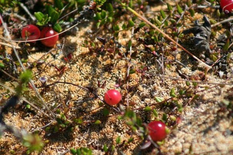
Tranbär på Hillebolamossen. Foto: Ronny Fredriksson
Hjortron
Många uttrycker sin förvåning över att ”det finns” hjortron i norra Uppland, många tror att det måste man resa längre norrut för att kunna plocka. Det finns hjortron på många av norra Upplands mossar.
Tillgången på hjortron i Florarna varierar mycket. Vissa år är det således gott om dem och andra år nästan inga alls. Den stora tallmossen vid Stormon, Mörkmossen, brukar vara ett relativt säkert ställe.
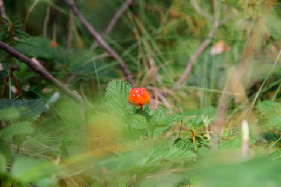
Hjortron på Tegelsmora Stormosse. Foto: Ronny Fredriksson
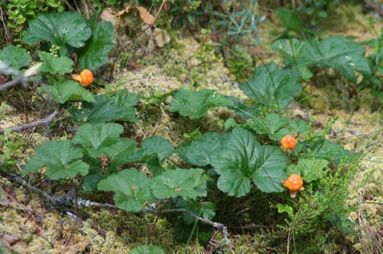
Hjortron. Foto: Ronny Fredriksson
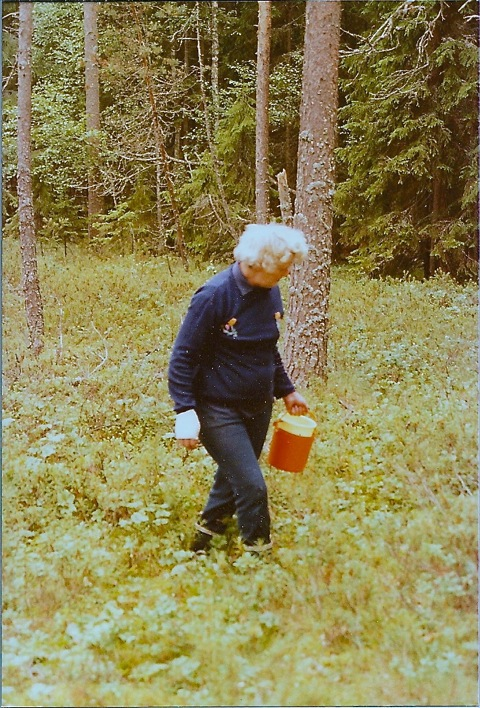
Min mormor Vera är ute och letar hjortron på Mörkmossen. 1980-talet. Foto: Ronny Fredriksson
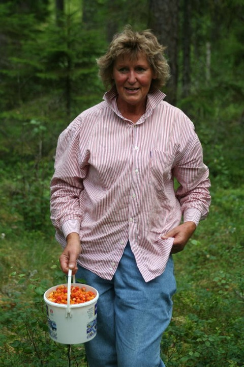
Min mamma Britt-Marie med hjortron från Sjudars ”egen” mosse :-). Foto: Ronny Fredriksson
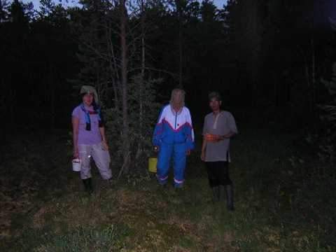
Moster Kristina, mamma Britt-Marie och Alexander efter en kvällsplockning på Mörkmossen som nästan hann övergå i natt (bilden tagen strax efter 22). Notera insektsluvorna. Foto: Ronny Fredriksson
Lingon
Finns det gott om tidvis framförallt i hällmarkstallskogarna, men även ibland på tuvor i kanterna på de stora tallmossarna. Exempelvis brukar det finnas bra med lingon på Tegelsmora Stormosse emellanåt.
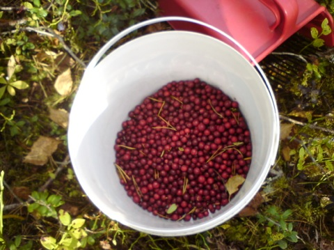
Lingon från Tegelsmora Stormosse. Foto: Ronny Fredriksson
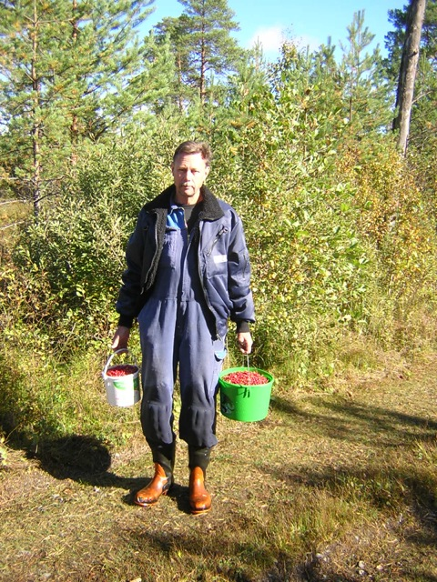
Pappa, Åke Fredriksson, efter framgångsrik lingonplockning på Tegelsmora Stormosse 2003. Foto: Ronny Fredriksson
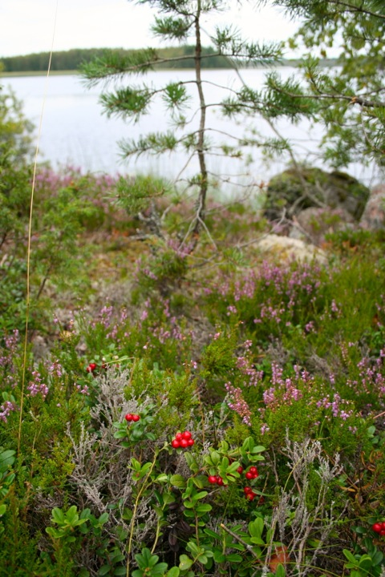
Lingon och ljung med Finnsjön i bakgrunden. Foto: Ronny Fredriksson
Svamp
Det finns mycket fina svampskogar i Florarna. Det gäller bara att hitta dem :-)
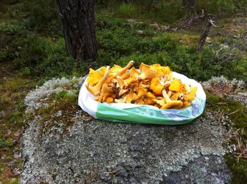
Kantareller upplagda på ”Lyssnarstenen” vid Norrberget. Foto: Ronny Fredriksson
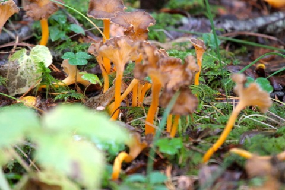
Höstkantarell vid Nymndängarna. Foto: Ronny Fredriksson
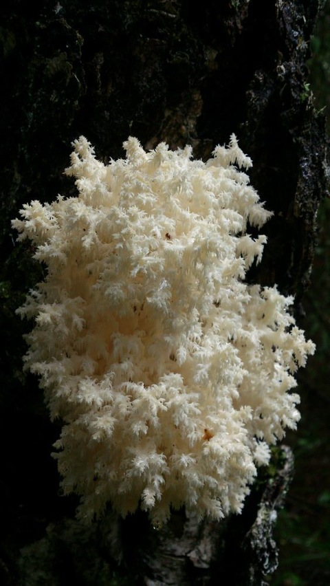
Koralltaggsvamp är ovanlig och rödlistad. Denna hittad efter ”Sten-på-sten” stigen vid reservatsgränsen (SV Lilla Agnsjön). Foto: Ronny Fredriksson
Sileshår
I Florarna finns en sk köttätande växt. Det är sileshåret som finns relativ vanligt på mossar och myrar.

Sileshår på myren Långängen nära Labbo gård. Foto: Ronny Fredriksson